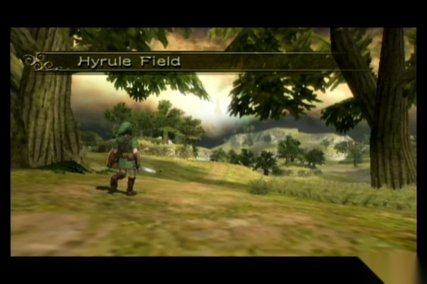
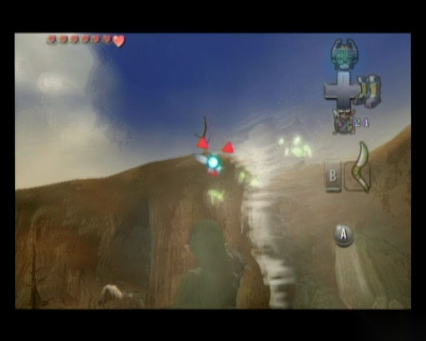
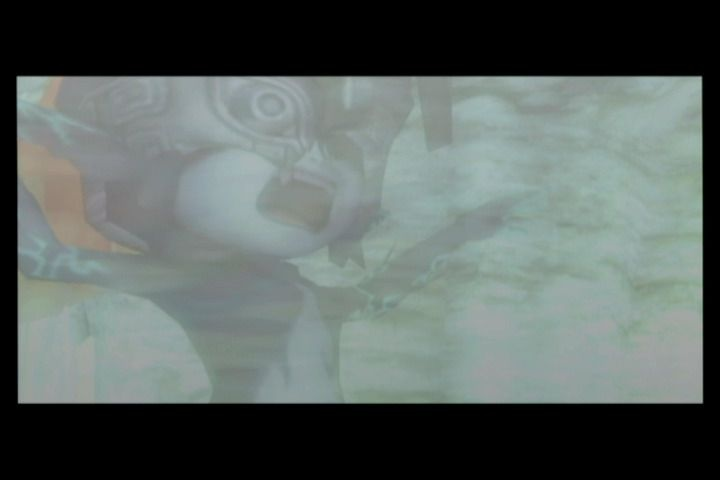
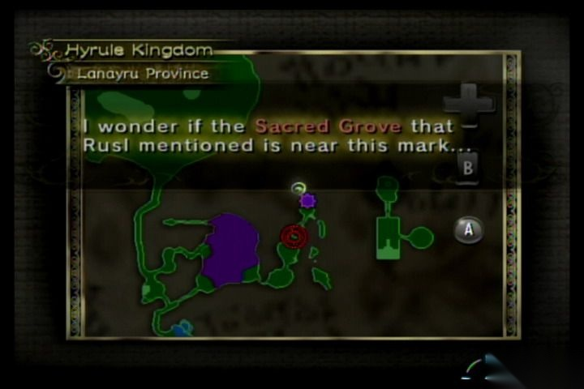
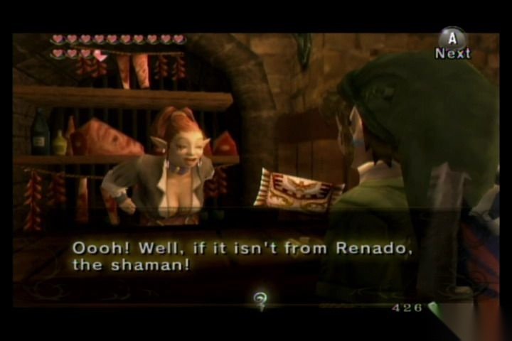
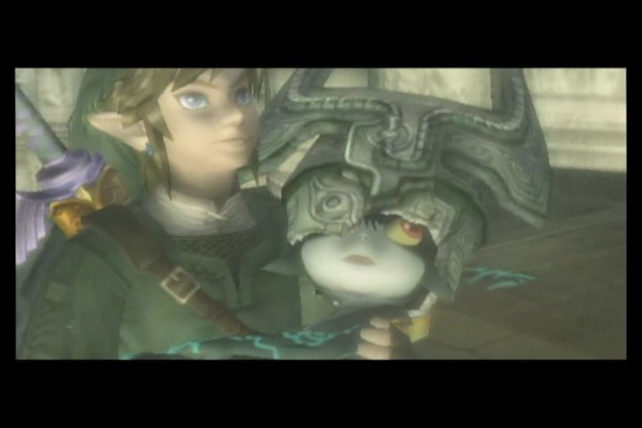

Chapter 1
Chapter 1: The First Page of a Hero's Legend
Link's everyday life in Ordon Village gives way to the first Twilight crisis, the rescue of the village children, and the opening path into the Forest Temple.
Read chapterMain Walkthrough
Follow the full story route from the Ordon opening through every major dungeon and the final showdown at Hyrule Castle.
Chapter 1
Link's everyday life in Ordon Village gives way to the first Twilight crisis, the rescue of the village children, and the opening path into the Forest Temple.
Read chapter
Chapter 2
The Eldin arc pushes the route through Kakariko Village, Death Mountain, and the Goron Mines while the world grows more dangerous and more mythic.
Read chapter
Chapter 3
The Zora and Lake Hylia storyline expands the world map, restores Lanayru, and carries the adventure toward the third shadow and a major turning point.
Read chapter
Chapter 4
The desert campaign introduces Arbiter's Grounds, mirror lore, and the long transition from fused shadows to the Mirror of Twilight quest.
Read chapter
Chapter 5
The Snowpeak storyline mixes travel, mansion exploration, and one of the game's most personal dungeon arcs as the mirror hunt continues.
Read chapter
Chapter 6
The Temple of Time route and the Dominion Rod chapter pull the story deeper into ancient Hyrule and the strange machinery of its forgotten age.
Read chapter
Chapter 7
The City in the Sky chapter turns the mirror search upward, linking the Oocca storyline with a wind-swept dungeon and the final mirror shard.
Read chapter
Chapter 8
The Palace of Twilight chapter closes in on Midna's homeland and sets up the endgame with a direct confrontation against the powers behind the invasion.
Read chapter
Chapter 9
The final Hyrule Castle chapter covers the last ascent, the closing boss sequence, and the decisive end of the main campaign in The Legend of Zelda: Twilight Princess.
Read chapter